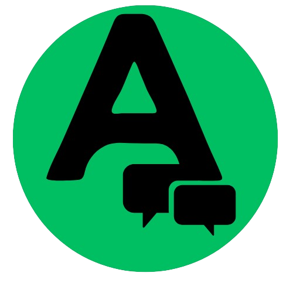
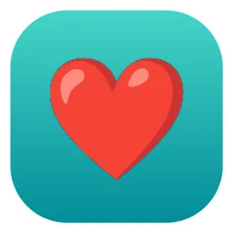
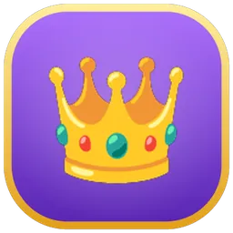
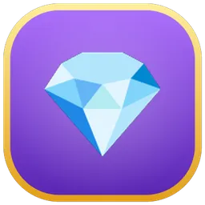
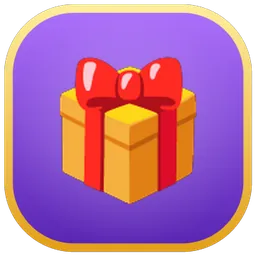

@amina_cuisine2 h · Abidjan
♥ 1,2 k💬 84🎁 12

Dossier de présentation du projet Afrolook : le problème, la solution, le produit, le modèle économique et la vision à un million d'utilisateurs.
Investisseurs · Équipe · Stagiaires et nouveaux arrivantsAfrolook est un réseau social mobile où les créateurs et leur communauté gagnent de l'argent réel grâce à ce qu'ils publient, partagent et soutiennent, avec des paiements pensés pour l'Afrique (Mobile Money) et ouverts au monde entier.
Chaque vue d'abonné, chaque cadeau, chaque abonnement à un canal rapporte au créateur. Il garde 70 % de ce que ses fans paient.
Mobile Money, devises locales, langues multiples (français, anglais, espagnol, allemand, arabe, portugais, chinois, swahili).
Fil d'actualité, vidéos, lives, canaux, groupes, messagerie, boutique, défis, stickers : une seule application.
Tout se paie en pièces. Les pièces gagnées se convertissent en argent et se retirent par Mobile Money ou virement.
Les grandes plateformes sont gratuites pour les utilisateurs, mais elles captent la valeur. En Afrique et dans la diaspora, la grande majorité des créateurs ne touche rien, ou ne peut pas être payée.
Les programmes de monétisation exigent des seuils d'abonnés très hauts, un compte bancaire international ou PayPal. Mobile Money n'est presque jamais accepté.
Il faut des milliers d'abonnés et d'heures de visionnage avant le premier centime. Les petits créateurs travaillent sans espoir de revenu.
Les algorithmes mondiaux favorisent les contenus américains ou européens. Un nouveau créateur africain est rarement découvert.
Les fans veulent aider leurs créateurs préférés, mais n'ont ni carte bancaire ni moyen simple de donner, d'acheter ou de s'abonner.
Ordres de grandeur publics et estimations internes, à actualiser avec des sources avant toute présentation officielle.
Qui : vidéastes, musiciens, humoristes, cuisiniers, entrepreneurs, formateurs, influenceurs.
Besoin : être vus, être payés, simplement.
Ce qu'ils trouvent : RPM sur les vues, abonnements de canal, ventes de contenu, cadeaux, lives payants.
Qui : 16 à 35 ans, très mobiles, actifs sur les réseaux.
Besoin : divertissement, appartenance, soutenir ceux qu'ils aiment.
Ce qu'ils trouvent : fil riche, canaux, groupes, défis, stickers, cadeaux et parrainage rémunéré.
Qui : boutiques, restaurants, services, artistes.
Besoin : toucher une audience locale à petit prix.
Ce qu'ils trouvent : boosts de posts, publicités, boutique et services, comptes officiels vérifiés.
Qui : Africains et Afro-descendants en Europe, aux Amériques, dans le Golfe.
Besoin : rester proche du pays, de la culture, de la musique.
Ce qu'ils trouvent : contenus de leur région, canaux, soutien direct, paiements en pièces.
Côte d'Ivoire, Sénégal, Cameroun, Bénin, Togo, RDC…
Nigeria, Ghana, Kenya, Tanzanie…
France, Belgique, Royaume-Uni, États-Unis, Canada.
Caraïbes, Amérique latine, Moyen-Orient, Asie.
Afrolook repose sur un principe simple : une partie de ce que la plateforme gagne retourne aux créateurs et à leur communauté, en argent réel et en toute transparence.
Photos, vidéos, lives, textes, stickers.
Vues, likes, commentaires, cadeaux, abonnements.
Pièces gagnées, 70 % pour le créateur.
Mobile Money, virement, carte, PayPal.
Devenir la première plateforme sociale où un jeune créateur africain peut vivre de son talent, et où le monde entier peut le découvrir et le soutenir.
Donner à chaque personne les outils pour publier, être découverte, être payée et retirer son argent simplement, depuis son téléphone.
Un fil personnalisé, avec découverte des nouveaux créateurs et contenus des abonnements.
Vidéos courtes et longues, lecture fluide, publication simple depuis le téléphone.
Diffusion en direct, cadeaux en direct, lives privés payants avec ticket en pièces.
Pages de créateurs avec abonnés, canaux gratuits ou privés avec abonnement mensuel payant.
Discussions, groupes publics ou privés, photos, vidéos, messages vocaux.
Compétitions entre créateurs : votes payants, cagnotte, classement et distribution des gains.
Vente de vidéos, photos, documents, produits et services par les créateurs et marques.
Stickers officiels et de créateurs dans les commentaires, packs gratuits ou payants, stickers-cadeaux.
Sans publicités, badges, avantages exclusifs, plus de stickers par jour, mise en avant.
Les marques et créateurs mettent en avant leurs posts ou leur canal, après validation.
Le parrain touche 2,5 % des paiements de ses filleuls, pris sur la part de la plateforme.
Règles claires, modération, signalements, anti-spam, comptes officiels vérifiés.
Disponible sur Android et iPhone. Les ventes de contenus et certaines options d'achat sont adaptées aux règles de chaque boutique d'applications.
Une interface sombre et rapide, aux couleurs d'Afrolook : noir, vert et jaune. Maquettes de principe.
Le fil « Pour toi » mêle abonnements et nouveaux créateurs. Un créateur sans audience peut être découvert grâce à la découverte à froid.
Chaque créateur ou marque a sa page : publications, vidéos, présentation. L'abonnement peut être gratuit ou payant.
Pendant un live, les spectateurs offrent des cadeaux. Un live peut aussi être privé, avec un ticket d'entrée en pièces.
Les commentaires deviennent un espace vivant : stickers animés, cadeaux en pièces, classement hebdomadaire des meilleurs commentaires.




Les abonnés Premium et Gold envoient des stickers animés. Les meilleurs commentaires de la semaine sont récompensés.
Un sticker-cadeau coûte 20, 50 ou 100 pièces. Il est partagé : 40 % à l'auteur du commentaire, 30 % au créateur du sticker, 30 % à Afrolook.
Les créateurs proposent leurs packs, gratuits ou payants. Ils gardent 70 % des ventes. L'équipe vérifie chaque pack avant publication.
Le portefeuille et la page de gains rendent la monétisation visible : ce que chaque vue, chaque cadeau et chaque abonné a rapporté.
Les valeurs affichées sur ces maquettes sont des exemples illustratifs et ne représentent pas des revenus réels.
Pièces achetées (pour payer) et pièces gagnées (convertibles). Le retrait se fait par Mobile Money, virement, carte ou PayPal.
Le RPM va de 200 à 1 000 FCFA pour 1 000 vues d'abonnés. Plus l'engagement et la qualité montent, plus le palier monte.
Les participants s'affrontent, la communauté vote avec des pièces, et la cagnotte est redistribuée aux gagnants.
Les vues des abonnés rapportent de 200 à 1 000 FCFA pour 1 000 vues, selon le score créateur : Débutant 200, Standard 400, Avancé 600, Expert 800, Élite 1 000.
Cadeaux sur posts, commentaires et lives, likes en pièces : le créateur reçoit des pièces gagnées convertibles.
Un canal privé fait payer un abonnement mensuel défini par le créateur, qui garde 70 %.
Ticket d'entrée en pièces pour un live privé ; vente de vidéos, photos et documents.
Participations, votes payants et cagnotte distribuée ; récompenses hebdomadaires des meilleurs commentaires.
2,5 % sur les paiements des filleuls ; packs de stickers payants avec 70 % pour le créateur.
Les pièces. Tout se paie en pièces. Les pièces achetées (Mobile Money ou App Store) servent à payer dans l'application. Les pièces gagnées sont convertibles en argent : 25 pièces = 10 FCFA.
Le partage. Sur chaque paiement entre utilisateurs, 70 % au créateur, 30 % à la plateforme. Les commissions de parrainage (2,5 % + 2,5 %) sont prises sur la part d'Afrolook, jamais sur celle du créateur.
Le retrait. Le créateur convertit ses pièces gagnées, demande un retrait en sa devise : Mobile Money, ou virement, carte et PayPal (minimum 100 $ hors Mobile Money). Le taux de change est enregistré avec la demande.
La qualité protège les gains. Les posts signalés perdent du score, ce qui fait baisser le palier et le RPM. Un créateur inactif voit son score décroître, et son compte peut être bloqué après 20 jours sans publication, avec déblocage possible en pièces.
| Critère | Afrolook | Réseaux sociaux mondiaux | Plateformes vidéo |
|---|---|---|---|
| Revenu dès les premiers abonnés | ✔ | ✘ (seuils élevés) | Seuils élevés |
| Paiement par Mobile Money | ✔ | ✘ | ✘ |
| Part du créateur sur les paiements de ses fans | 70 % | Variable | Variable |
| Soutien direct (cadeaux, abonnements, stickers payants) | ✔ | Limité | Limité |
| Canaux, groupes, lives, défis, boutique dans une seule application | ✔ | Plusieurs applications | ✘ |
| Parrainage rémunéré | ✔ 2,5 % + 2,5 % | ✘ | ✘ |
| Découverte des nouveaux créateurs locaux | ✔ découverte à froid | Favorise les gros comptes | Favorise les gros comptes |
| Langues et devises locales | 8 langues, devise du pays | Partiel | Partiel |
| Règles de gains publiques et transparentes | ✔ page « Règles » | ✘ | Partiel |
Tableau de positionnement indicatif, établi sur les pratiques publiques générales des grandes plateformes ; il ne cite aucune marque et doit être vérifié avant diffusion externe.
Paiements locaux. Mobile Money et devises du pays : l'argent arrive là où les gens vivent.
Un seuil d'entrée bas. Un petit créateur peut gagner dès ses premiers abonnés actifs.
Une économie intégrée. Une seule monnaie, les pièces, pour payer, offrir, soutenir et gagner.
Afrolook ne vend pas les données de ses utilisateurs. La plateforme gagne quand l'économie des créateurs fonctionne.
Achat de pièces par Mobile Money ou App Store : le revenu principal, lié à l'usage.
Part de la plateforme sur abonnements, cadeaux, votes, lives privés, stickers payants.
Abonnements mensuels : sans publicités, badges, avantages et limites élargies.
Mise en avant d'un post ou d'un canal, bannières et pavés natifs, après validation.
Déblocage de compte ou de canal inactif, création d'un canal ou groupe supplémentaire (500 pièces).
Vérification payante pour marques, médias et personnalités, avec badge officiel.
plus ils publient
plus de fans arrivent
plus de pièces dépensées
et redistribue
Notre objectif est d'atteindre un million d'utilisateurs. À cette échelle, nos estimations donnent les résultats suivants, côté créateurs comme côté plateforme.
Les créateurs réellement actifs, avec une communauté engagée, pourraient gagner entre 300 000 et 600 000 FCFA par mois en cumulant vues monétisées, cadeaux, abonnements de canal, ventes et parrainage.
La plateforme pourrait générer plus de 30 000 000 FCFA par mois en cumulant recharge de pièces, part de 30 %, abonnements Premium et Gold, boosts et publicités.
Estimations internes, fondées sur l'objectif de 1 million d'utilisateurs et sur nos règles de partage actuelles. Ce ne sont ni des garanties ni des promesses de revenu : les résultats dépendront de l'engagement réel, du nombre de créateurs actifs et de la conversion en achats. Le calendrier ci-dessus est indicatif et sera ajusté avec les données réelles.
La page « Règles et confidentialité » de l'application explique à chaque utilisateur comment l'argent circule, ce qui est autorisé et ce qui est sanctionné.
Contenu autorisé et interdit, contenu trompeur, spam et manipulation, respect des utilisateurs.
Seuls les contenus dont on détient les droits sont autorisés. Signalement des violations et retrait des contenus.
Un compte par personne, authentification, procédure en cas de compte compromis.
Avertissement, suspension temporaire, suspension définitive. Signalements traités par l'équipe.
Scores, paliers, RPM, partage 70/30, parrainage et inactivité sont expliqués publiquement.
Suppression du compte depuis l'application, restauration possible, respect de la vie privée.
Application Android et iPhone, fil, canaux, groupes, lives, défis, boutique, abonnements Premium et Gold, pièces et retraits, règles publiques, stickers animés et stickers-cadeaux.
Publication sur l'App Store et Google Play dans le monde entier, programme de créateurs fondateurs, campagnes de lancement et de parrainage, premiers retraits publics.
Stickers de créateurs payants, comptes officiels, régie publicitaire, découverte régionale, outils d'analyse pour créateurs, partenariats médias et musique.
Objectif 1 million d'utilisateurs, nouveaux moyens de paiement, recommandations plus fines, modération renforcée, équipes locales dans les marchés clés.
Les mots à connaître pour parler le même langage que l'équipe.
La monnaie de l'application. Achetée (non convertible) ou gagnée (convertible : 25 pièces = 10 FCFA).
Ce que gagne un créateur pour 1 000 vues d'abonnés. Dépend de son palier.
Note qui monte avec l'engagement et la qualité, et baisse avec les signalements ou l'inactivité.
Débutant, Standard, Avancé, Expert, Élite : il fixe le RPM du créateur.
Page d'un créateur ou d'une marque, avec abonnés ; gratuit ou privé avec abonnement mensuel.
Compétition entre créateurs, avec votes payants et cagnotte redistribuée.
Publicité payée en pièces pour mettre un post ou un canal en avant, validée avant diffusion.
Images animées dans les commentaires ; les stickers-cadeaux (20, 50, 100 pièces) rémunèrent leur auteur.
pour le créateur sur ce que paient ses fans
pour le parrain, pris sur la part d'Afrolook
sans publier avant le blocage d'un compte ou canal
Pour les détails complets et à jour, la référence est la page « Règles et confidentialité » de l'application.